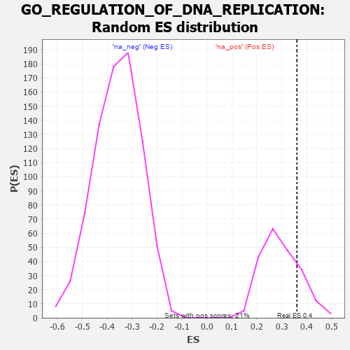

| | | Dataset | 7d |
| Phenotype | NoPhenotypeAvailable |
| Upregulated in class | na_pos |
| GeneSet | GO_REGULATION_OF_DNA_REPLICATION |
| Enrichment Score (ES) | 0.3607923 |
| Normalized Enrichment Score (NES) | 1.2231501 |
| Nominal p-value | 0.20192307 |
| FDR q-value | 0.46891928 |
| FWER p-Value | 1.0 |
Table: GSEA Results Summary
 Fig 1: Enrichment plot: GO_REGULATION_OF_DNA_REPLICATION
Fig 1: Enrichment plot: GO_REGULATION_OF_DNA_REPLICATION
Profile of the Running ES Score & Positions of GeneSet Members on the Rank Ordered List
| PROBE | GENE SYMBOL | GENE_TITLE | RANK IN GENE LIST | RANK METRIC SCORE | RUNNING ES | CORE ENRICHMENT | | 1 | HUS1 | | | 362 | 0.735 | 0.0146 | Yes |
| 2 | NBN | | | 405 | 0.696 | 0.0663 | Yes |
| 3 | ORC3 | | | 479 | 0.644 | 0.1098 | Yes |
| 4 | RFC2 | | | 488 | 0.635 | 0.1608 | Yes |
| 5 | RFC3 | | | 663 | 0.571 | 0.1856 | Yes |
| 6 | CDC6 | | | 709 | 0.557 | 0.2255 | Yes |
| 7 | BLM | | | 804 | 0.531 | 0.2572 | Yes |
| 8 | RFC4 | | | 815 | 0.528 | 0.2992 | Yes |
| 9 | ORC5 | | | 1022 | 0.479 | 0.3124 | Yes |
| 10 | KAT7 | | | 1240 | 0.440 | 0.3211 | Yes |
| 11 | DACH1 | | | 1471 | 0.395 | 0.3245 | Yes |
| 12 | WAPL | | | 1758 | 0.344 | 0.3166 | Yes |
| 13 | RAD17 | | | 1804 | 0.336 | 0.3385 | Yes |
| 14 | INO80 | | | 2120 | 0.288 | 0.3224 | Yes |
| 15 | ATAD5 | | | 2197 | 0.277 | 0.3355 | Yes |
| 16 | CDK2 | | | 2226 | 0.272 | 0.3542 | Yes |
| 17 | FAF1 | | | 2340 | 0.255 | 0.3608 | Yes |
| 18 | CDT1 | | | 2505 | 0.226 | 0.3586 | No |
| 19 | ATR | | | 2800 | 0.183 | 0.3366 | No |
| 20 | BRCA2 | | | 3024 | 0.146 | 0.3204 | No |
| 21 | RBBP6 | | | 3066 | 0.141 | 0.3268 | No |
| 22 | RFC5 | | | 3389 | 0.091 | 0.2936 | No |
| 23 | GLI1 | | | 3489 | 0.079 | 0.2876 | No |
| 24 | DHX9 | | | 3693 | 0.044 | 0.2657 | No |
| 25 | SMC3 | | | 3701 | 0.042 | 0.2682 | No |
| 26 | ESCO2 | | | 4605 | -0.119 | 0.1642 | No |
| 27 | TIPIN | | | 4839 | -0.166 | 0.1485 | No |
| 28 | ATRX | | | 4929 | -0.184 | 0.1523 | No |
| 29 | CDK1 | | | 5264 | -0.262 | 0.1317 | No |
| 30 | FGFR1 | | | 5543 | -0.332 | 0.1238 | No |
| 31 | ATG7 | | | 5858 | -0.420 | 0.1187 | No |
| 32 | RAC1 | | | 6036 | -0.484 | 0.1360 | No |
| 33 | CDC42 | | | 6236 | -0.548 | 0.1558 | No |
| 34 | EGFR | | | 6708 | -0.765 | 0.1591 | No |
Table: GSEA details [plain text format]

Fig 2: GO_REGULATION_OF_DNA_REPLICATION: Random ES distribution
Gene set null distribution of ES for GO_REGULATION_OF_DNA_REPLICATION